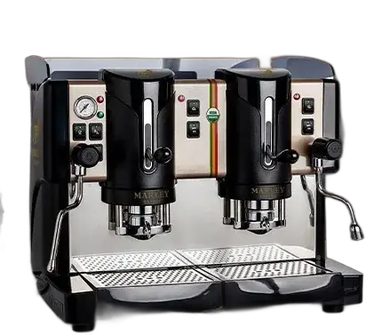

Marley Coffee · Empresas · Restaurantes

¿Qué café y máquina convienen para un restaurante?
Para evaluar una solución de café para un restaurante, parte por la carta, las tazas en hora punta, el espacio y quién prepara cada bebida. Con esos datos puedes comparar equipos, productos y responsabilidades que se confirmen por escrito para tu operación.
Tu oferta · Restaurantes
A tu ritmo de servicio: el mismo café en cada mesa, sin barista.
Pods
Espresso en dosis individuales, 2 tazas a la vez
30 a 120 tazas al día
En comodato: Marley presta la máquina y tú compras los insumos. Modelo, mínimo mensual y condiciones a confirmar con tu ejecutivo.
Productos del pack
 Café en grano orgánico8 × 907 g$447.920 neto
Café en grano orgánico8 × 907 g$447.920 neto Leche20 × 500 g$185.000 neto
Leche20 × 500 g$185.000 neto Azúcar y stevia en sobresFormato a confirmar$58.000 neto
Azúcar y stevia en sobresFormato a confirmar$58.000 neto- Revolvedores y servilletasFormato a confirmar$32.000 neto
Referencia: la cotización completa de Marley del 19-oct-2026, con todas las líneas, suma $1.491.220 neto con kit y filtro.
Condiciones a confirmar
- Compra mínima mensual: a confirmar.
- Plazo de entrega: a confirmar.
- Compatibilidad de insumos con la máquina: a confirmar.
Precios netos referenciales, de la cotización de Marley del 19-oct-2026. Los confirma tu ejecutivo.

Cómo funciona la evaluación
Cómo funciona la evaluación
- Describe el servicio: Indica las bebidas que ofreces, el flujo esperado y cómo se concentra la demanda.
- Reúne datos de operación: Registra consumo diario, hora punta, espacio, conexiones y quién operará el equipo.
- Compara la propuesta: Revisa por separado equipo, productos, instalación, limpieza, soporte, costos y término del acuerdo.
Compatibilidad, disponibilidad, servicios, soporte y condiciones comerciales se confirman para cada operación en una propuesta.
Qué comparar
Qué comparar
| Carta y volumen | Bebidas, tazas por día y hora punta. |
|---|---|
| Operación | Espacio, conexiones, limpieza y personas responsables. |
| Condiciones | Productos, soporte, costos y término por escrito. |
Preguntas habituales de compradores
Preguntas habituales de compradores
¿Qué máquina de café conviene para un restaurante?
Depende de la carta, la hora punta, el espacio y quién prepara las bebidas. Compara esos datos con la ficha del modelo disponible.
¿Cuánto café necesita mi restaurante?
Estima tazas diarias × días de atención × gramos de tu receta y divide por 1.000 para obtener kilos orientativos.
¿Qué incluye un comodato de máquina?
No presupongas productos, instalación o mantenimiento. Pide que cada compromiso y cobro aplicable aparezca en la propuesta.